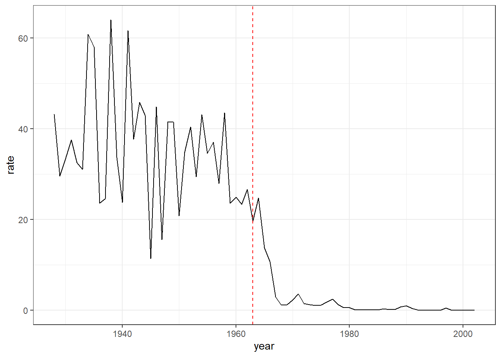
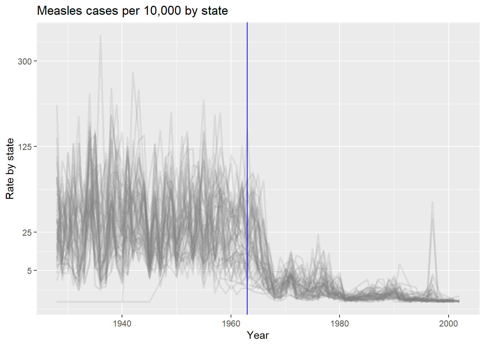
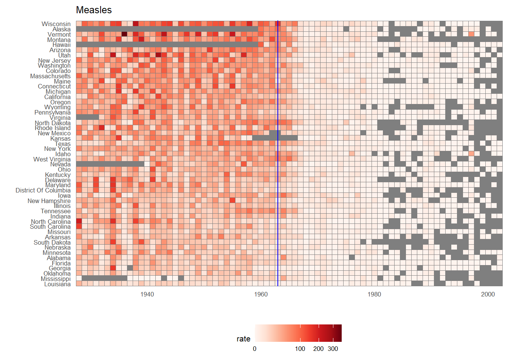

Measles vaccination is an immunization designed to protect against measles, a highly contagious viral infection. The MMR vaccine is a highly effective and safe medication to prevent measles, reducing the risk of infection, complications, and outbreaks. The World Health Organization (WHO) recommends routine measles vaccination as part of childhood immunization programs globally to achieve high levels of population immunity and prevent the spread of the virus (https://www.cdc.gov/vaccines/vpd/measles/index.html). On this premise, in order to effectively communicate science and democratize knowledge, we will illustrate an example of impact of vaccines on battling infectious diseases, using publicly available epidimiological data.
This is also part of the Problem Set 2 of the DECIPHER LIFE SCIENCES MOOC
Load the dslabs package and figure out what is in the us_contagious_diseases dataset. Create a data frame, call it avg, that has a column for year, and a rate column containing the cases of Measles per 10,000 people per year in the US. Because we start in 1928, exclude Alaska and Hawaii. Make sure to take into account the number of weeks reporting each year. If a week was not report, it should not be included in the calculation of the rate.
#| load necessary R packages and proceed with fetching the available datalibrary(tidyverse)library(dslabs)library(RColorBrewer)avg <- us_contagious_diseases |>filter(!state %in%c("Hawaii","Alaska") & disease =="Measles"& weeks_reporting >0) |>group_by(year) |>summarize(rate =sum(count / weeks_reporting *52, na.rm=TRUE) /sum(population) *10000)head(avg,2)
# A tibble: 2 x 2
year rate
<dbl> <dbl>
1 1928 43.2
2 1929 29.6
Use the data frame avg to make a trend plot showing the cases rate for Measles per year. Add a vertical line showing the year the Measles vaccines was introduced.
#| vaccine introduction year = 1963 avg |>ggplot(aes(year, rate)) +geom_line() +geom_vline(xintercept =1963, linetype ="dashed", color ="red")+labs() +theme_bw()

Add a grey trend line for each state to the plot above. Use a transformation that keeps the high rates from dominating the figure.
us_contagious_diseases |>filter(!state %in%c("Hawaii","Alaska") & disease =="Measles"& weeks_reporting >0) |>mutate(rate = count / population *10000*52/ weeks_reporting) |>mutate(state =reorder(state, ifelse(year <=1963, rate, NA), median, na.rm =TRUE)) |>filter(!is.na(rate)) |>ggplot() +geom_line(aes(year, rate, group = state), color ="grey50", show.legend =FALSE, alpha =0.16, linewidth =1) +scale_y_continuous(trans ="sqrt", breaks =c(5, 25, 125, 300)) +ggtitle("Measles cases per 10,000 by state") +xlab("Year") +ylab("Rate by state") +geom_vline(xintercept =1963, col ="blue")

In the plot above we cant tell which state is which curve. Using color would be challenging as it is hard if not impossible to find 48 colors humans can distinguish. To make a plot where you can compare states knowing which is which, use one of the axis for state and the other for year, and then use hue or intensity as a visual cue for rates. Use a sqrt transformation to avoid the higher rates taking up all the color scale. Use grey to denote missing data. Order the states based on their highest peak. You can include Hawaii and Alaska.
library(RColorBrewer)reds <- RColorBrewer::brewer.pal(9, "Reds")us_contagious_diseases |>filter(disease =="Measles") |>mutate(rate = count / population *10000*52/ weeks_reporting) |>mutate(state =reorder(state, ifelse(year <=1963, rate, NA), median, na.rm =TRUE)) |>ggplot(aes(year, state, fill = rate)) +geom_tile(color ="grey50") +scale_x_continuous(expand =c(0,0)) +scale_fill_gradientn(colors =brewer.pal(9, "Reds"), trans ="sqrt") +geom_vline(xintercept =1963, col ="blue") +theme_minimal() +theme(panel.grid =element_blank(), legend.position ="bottom", text =element_text(size =8)) +labs(title ="Measles", x ="", y ="")

Collectively, both aforementioned plots highlight the significant overall reduction of Measles incidence rates, after the introduction of the vaccination; which in parallel could reflect further specific geographical and epidemiological characteristics of each individual US state population, in concordance with the related vaccination rate over time; this correlates also well with other published data, highlighting the fact that approximately more than 500k documented cases occurred each year in the U.S. in the 20th century, while in 2020 were presented only 13 incidents (https://www.mayoclinic.org/diseases-conditions/history-disease-outbreaks-vaccine-timeline/measles).